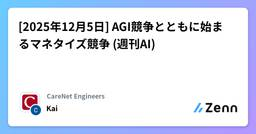

CareNet Engineersのフィード
https://zenn.dev/p/carenet
株式会社ケアネットのエンジニアブログです。CareNetサービスの技術情報を中心に記事を投稿しております。 各記事の内容は個人の意見であり、企業を代表するものではございません。
フィード

[2025年12月5日] AGI競争とともに始まるマネタイズ競争 (週刊AI)
CareNet Engineersのフィード
こんにちは、Kaiです。もろもろ年末進行気味になっておりまして、先週お休みしていたうえ今回も縮小版でお送りいたします。先々週のビッグウィークに続き、この2週間でもClaudeとDeepSeekの新モデルが発表されました。さらにOpenAIがコードレッドを発令し、さっそくGPT-5.2と思われるモデルがリアルワールドで小規模検証されているという噂があります。巷では、「Google VS OpenAIのどちらが勝つか」という話題が盛り上がっていました。統合プラットフォームであり、全てのユーザ体験をAIで統合できるGoogleと、既にAIのデファクトを取り、圧倒的なユーザ数とタッチポイン...
1日前

[2025年11月21日] AIビッグウィーク：Gemini3.0、GPT-5.1Pro、Nano-banana Proなど (週刊AI)
CareNet Engineersのフィード
こんにちは、Kaiです。いやもう本当に発表固めるのやめてほしい。まだろくに比較検証も出来ていないので、今回のポエムは短めでいきます。皆さんもこんなポエム読むより早く触った方がいいです。GoogleからはGemini3.0とIDEのAntigravityが公開され、今のところは誰でも無料で使えるようです。Googleの凄まじい資本力と賭けている感が伝わってきます。ここで注目なのは、「事前学習スケーリングでまた新たな進歩があった」としている点です。ここ最近は事前学習のスケーリングはほぼやり尽くされ、事後学習と推論のスケーリングに焦点が移っていましたが、まだまだ事前学習でも改良の余地があ...
15日前
[2025年11月14日] ChatGPTはダイモンになるか (週刊AI)
CareNet Engineersのフィード
こんにちは、Kaiです。ChatGPTにGPT5.1が追加されました。性能的なアップデートではなく、より温かみのある受け答えになると同時に、様々なコミュニケーションスタイルを選択できるようになりました。推測ですが、4oロス騒動を受けて、OpenAIは「パートナーとしてのAI＝人間味のある受け答え」に大きなニーズがあることに気づいたのでしょう。もちろん、これまでも自分が指示を与えることで性格のようなものをエミュレートすることはできました。しかし、それはあくまでも「自分の指示」であって、想像の範疇を出ないものです。一方で、今回のアップデートで追加されたコミュニケーションスタイルは、これ...
22日前
「セッション、拡張設計、AI…PHPの次の一手は？」～【php】今週の人気記事TOP5（2025/11/30）
CareNet Engineersのフィード
!この記事はZennからphpのLike数が多い記事のリストを自動的取得し、AIを利用して要約し、自動更新されています。 【2025/11/30】「セッション、拡張設計、AI…PHPの次の一手は？」今週の人気記事TOP5（2025/11/30） CakePHPの新旧バージョンでSessionを共有するCakePHPの異なるバージョン間でセッションを共有する方法について解説。バージョンアップに伴うセッション処理の変更点を明らかにし、具体的な修正方法を提示しています。これにより、CakePHPのバージョン移行時におけるセッション管理の課題を解決し、スムーズな移行を支援します。...
22日前
「Laravel開発、次の一手はCookie？AI？DevContainer？」～【laravel】人気記事TOP5（2025/11/30）
CareNet Engineersのフィード
!この記事はZennからlaravelのLike数が多い記事のリストを自動的取得し、AIを利用して要約し、自動更新されています。 【2025/11/30】「Laravel開発、次の一手はCookie？AI？DevContainer？」人気記事TOP5（2025/11/30） HTTP通信でCookieが送られない理由と対処法【PHP/JavaScript】HTTP通信でCookieが送られない原因と対処法を解説。ブラウザとHTTPクライアントでCookieの扱いが異なり、セッション維持に問題が発生する。ブラウザは自動でCookieを送信するが、cURLやGuzzleなどの...
1ヶ月前
「Gemini Enterprise試す？ログ基盤、最適解はどこに？」～【googlecloud】人気記事TOP5（2025/11/30）
CareNet Engineersのフィード
!この記事はZennからgooglecloudのLike数が多い記事のリストを自動的取得し、AIを利用して要約し、自動更新されています。 【2025/11/30】「Gemini Enterprise試す？ログ基盤、最適解はどこに？」人気記事TOP5（2025/11/30） 知っておきたい！Google Antigravityの注目機能5選GoogleのDeveloper Relation Engineerであるバンダリ・ハレン氏が、Google Antigravityの注目機能を5つ紹介する記事。具体的な機能名は不明だが、Google AIの最新技術を活用したアプリケーシ...
1ヶ月前
[2025年11月7日] 最近の動きにみるGoogle帝国の苦悩と挑戦 (週刊AI)
CareNet Engineersのフィード
こんにちは、Kaiです。今週あまり大きな動きはありませんでしたが、Gemini3.0のプレビュー版があちらこちらで目撃され始めているようで、今月中にはリリースされると予想されています。Googleはエンタープライズ向けサービスでも攻勢を強めており、あくまで一つの見解ですが世界で最もAIに関する垂直統合を進めている企業だという意見も見られます。（個人的には、Applicationsはもうちょっと細分化すべきだとは思いますが）https://x.com/itsTarH/status/1985310991228260684一方、Microsoftは既存のソフトウェア・SaaS資産を活...
1ヶ月前
「Claude Code、使いこなせてる？開発現場の最適解とは？」～【ai】今週の人気記事TOP5（2025/11/30）
CareNet Engineersのフィード
!この記事はZennからaiのLike数が多い記事のリストを自動的取得し、AIを利用して要約し、自動更新されています。 【2025/11/30】「Claude Code、使いこなせてる？開発現場の最適解とは？」今週の人気記事TOP5（2025/11/30） 「AIに先にテストを全部書かせる」はTDDじゃない。でも、それもアリだよね。ログラスのテックブログ記事の要約です。記事では、AIを活用してテストを事前に一括作成する方法と、従来のTDD（テスト駆動開発）との違い、それぞれの使い分けについて解説しています。TDDはテストを先に記述し、それに合わせて実装を進める開発手法で...
1ヶ月前
「BedrockとAIエージェント、あなたのAWS戦略にどう活かす？」～【aws】今週の人気記事TOP5（2025/11/30）
CareNet Engineersのフィード
!この記事はZennからawsのLike数が多い記事のリストを自動的取得し、AIを利用して要約し、自動更新されています。 【2025/11/30】「BedrockとAIエージェント、あなたのAWS戦略にどう活かす？」今週の人気記事TOP5（2025/11/30） AWS リソース間通信は本当にインターネットに出ないのかを Datadog Network Path で検証するDatadog Network Pathを用いて、AWSリソース間の通信が本当にインターネットを経由しないかを検証した記事です。Network Pathの設定方法と検証結果を基に、ネットワーク経路の可視...
1ヶ月前
「FastAPI、YOLO、地理空間情報…次はどのPythonトレンドに乗る？」～【python】人気記事TOP5（2025/11/30）
CareNet Engineersのフィード
!この記事はZennからpythonのLike数が多い記事のリストを自動的取得し、AIを利用して要約し、自動更新されています。 【2025/11/30】「FastAPI、YOLO、地理空間情報…次はどのPythonトレンドに乗る？」人気記事TOP5（2025/11/30） FastAPIのテストコードを書いてDIの重要性を知った話FastAPIのテストコード作成を通じてDIの重要性を再認識した話。DI未適用コードではテスト時の依存解決が困難だったが、FastAPIのDependsを活用することで、テスト容易性が向上。開発コードとテストコードの例を示し、DI導入による柔軟性...
1ヶ月前
[2025年10月31日] 「非営利AI開発」という夢の終わり (週刊AI)
CareNet Engineersのフィード
こんにちは、Kaiです。今週は技術的なインパクトというよりも、ビジネス的なインパクトとしてOpenAIの営利組織化ニュースが大きな話題でしたね。そもそも非営利であまねく人類にAIの恩恵をもたらすという思想だったものが、（非営利の面は一応残しつつ）名実ともに変質を完了した瞬間でした。私も以前ニューラルネットワークの研究をしていたので、Transformer前夜はなんとなく「全てを解決する未知のアルゴリズムがあり、それがAGIにつながるのでは」という期待感があったような気がします（私の周囲だけかもしれませんが……）。そしてその期待感が、個人や小規模組織でも大きな変革を生み出せるかもしれな...
1ヶ月前
[2025年10月26日] WebがMCPになる日 (週刊AI)
CareNet Engineersのフィード
こんにちは、Kaiです。先週は投稿をお休みしたので2週間ぶりですね。大きな話題としては、ClaudeのAgent Skills、OpenAIのAtlas、Googleの量子コンピュータあたりでしょうか。Claudeはもう正統進化という印象で、特に開発者にとってかゆいところに手が届くアップデートを積み重ねています。あくまで手触りのよい善きツールに徹する、というスタンスなのかもしれません。一方のOpenAIですが、ついにGoogleと真っ向勝負するブラウザのAtlasをリリースしました。少しだけ触ってみましたが、現時点ではまだまだスピード、精度、セキュリティの面で全面的乗り換えができ...
1ヶ月前
「Laravelのデッドロック対策、あなたの現場ではどうしてる？」～【php】今週の人気記事TOP5（2025/10/26）
CareNet Engineersのフィード
!この記事はZennからphpのLike数が多い記事のリストを自動的取得し、AIを利用して要約し、自動更新されています。 【2025/10/26】「Laravelのデッドロック対策、あなたの現場ではどうしてる？」今週の人気記事TOP5（2025/10/26） Shardを横断してクエリを実行するツールを作った話フルスタックエンジニアのTom Higuchi氏が、シャーディングされたMySQL環境で横断検索を効率化するツールを開発。ソーシャルゲーム運用時の課題から着想し、Adminerにない機能を実装した。PHP7.0, MySQL5.7対応、クラスター設定、更新クエリ制限...
2ヶ月前
「LaravelとVue.js、どこまで連携させてる？次のトレンドは？」～【laravel】今週の人気記事TOP5（2025/10/26）
CareNet Engineersのフィード
!この記事はZennからlaravelのLike数が多い記事のリストを自動的取得し、AIを利用して要約し、自動更新されています。 【2025/10/26】「LaravelとVue.js、どこまで連携させてる？次のトレンドは？」今週の人気記事TOP5（2025/10/26） Laravel12でソシャゲAPI用のプロジェクトを作成してみるLaravel 12でソシャゲAPIプロジェクトを作成する手順を解説。Laravel 11以降、プロジェクト作成後のマイグレーション時にエラーが発生するため、事前に.envファイルのDB設定変更とマイグレーションファイルの修正が必要。AP...
2ヶ月前
「Gemini CLIと自律型DWH、活用してますか？」～【googlecloud】今週の人気記事TOP5（2025/10/26）
CareNet Engineersのフィード
!この記事はZennからgooglecloudのLike数が多い記事のリストを自動的取得し、AIを利用して要約し、自動更新されています。 【2025/10/26】「Gemini CLIと自律型DWH、活用してますか？」今週の人気記事TOP5（2025/10/26） 「自動化」のその先へ。BigQueryが切り拓く「自律型データウェアハウス」の未来BigQueryは、従来の自動化されたDWHから、自律性を持つDWHへと進化しています。Advanced Runtimeや自動マテリアライズド・ビュー等の機能により、クエリの最適化やリソース管理を自動で行い、パフォーマンスを向上さ...
2ヶ月前
[2025年10月10日] すべてがChatGPTになる？ (週刊AI)
CareNet Engineersのフィード
こんにちは、Kaiです。OpenAIのDev Dayが開催されました。Agent Builderが一番の目玉で、次がapps in ChatGPTでしょうか。Agent Builderは早速使ってみましたが、これまでのツールとそこまで大きい差は感じないですね。逆に言えば、もうこれでいいのでは……？という感じもします。Difyやn8nが今後どういう方向性を取るのかも注目したいところです。そしてapps in ChatGPT(Apps SDK)はいずれ来るだろうと思われていたものですが、やはり目にするとインパクトがありますね。のちほどご紹介する少し過激な記事（フロントエンドは消滅する）も...
2ヶ月前
「AI進化の波、あなたはどんなキャリアを築きますか？」～【ai】今週の人気記事TOP5（2025/10/26）
CareNet Engineersのフィード
!この記事はZennからaiのLike数が多い記事のリストを自動的取得し、AIを利用して要約し、自動更新されています。 【2025/10/26】「AI進化の波、あなたはどんなキャリアを築きますか？」今週の人気記事TOP5（2025/10/26） 2025/10/20時点で最良のAIコーディングプロセスAIコーディングにおける品質維持には、生成されたコードへの「直感的な違和感」を重視し、徹底的なレビューを行うべき。特にCodex推奨。LLMの知識活用能力不足とコンテキストサイズ制限が課題であり、Vibe Kanban等のタスク管理ツールで指示を細分化し、修正回数上限を設定...
2ヶ月前
「AWSの「高可用性」、どこまで対策してる？」～【aws】今週の人気記事TOP5（2025/10/26）
CareNet Engineersのフィード
!この記事はZennからawsのLike数が多い記事のリストを自動的取得し、AIを利用して要約し、自動更新されています。 【2025/10/26】「AWSの「高可用性」、どこまで対策してる？」今週の人気記事TOP5（2025/10/26） AWS障害はなぜグローバルに拡大したか？ US-EAST-1の「単一障害点」構造を徹底分析2025年10月、AWSで大規模障害が発生し、世界中のWebサービスに影響が及んだ。原因はUS-EAST-1リージョンにおけるDynamoDBのDNS解決異常であり、グローバルサービスのコントロールプレーンが同リージョンに集中していることが被害を拡...
2ヶ月前
BigQueryの本番データがすべて消えた日 - 大規模障害から学んだ復旧と再発防止策
CareNet Engineersのフィード
はじめにこんにちは！AI技術開発室のYTです。ケアネットでは、本番データウェアハウスとしてBigQueryを導入しています。ユーザー向けサービスと連動はしておらず、データ解析を目的とし、複数の部署が単一のGoogle Cloudプロジェクトを共有してデータを集約する運用をとっています。今回は、冷や汗が止まらなかった、BigQueryの本番データセットをすべて削除してしまったインシデントについて、その原因と復旧の過程、そして得られた学びを共有したいと思います。同じような環境でデータ運用されている方の参考になれば幸いです。 障害発生から復旧までのタイムライン忘れもしない202...
2ヶ月前
「AIエージェント開発、次の一手は？」～【python】今週の人気記事TOP5（2025/10/26）
CareNet Engineersのフィード
!この記事はZennからpythonのLike数が多い記事のリストを自動的取得し、AIを利用して要約し、自動更新されています。 【2025/10/26】「AIエージェント開発、次の一手は？」今週の人気記事TOP5（2025/10/26） uv × DockerでのPython開発環境構築方法松尾研究所では、高速なPythonパッケージ管理ツールuvを推奨しており、Docker環境でのuv利用方法を3パターン紹介しています。公式uv+Pythonイメージ（推奨）：Dockerfileがシンプルになる公式uvイメージ：ベースイメージを自由に選択可能公式インストーラ：開...
2ヶ月前